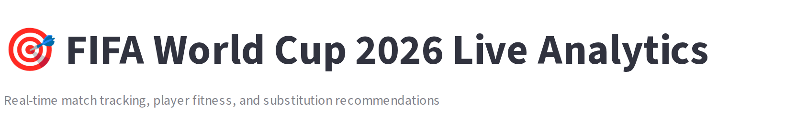
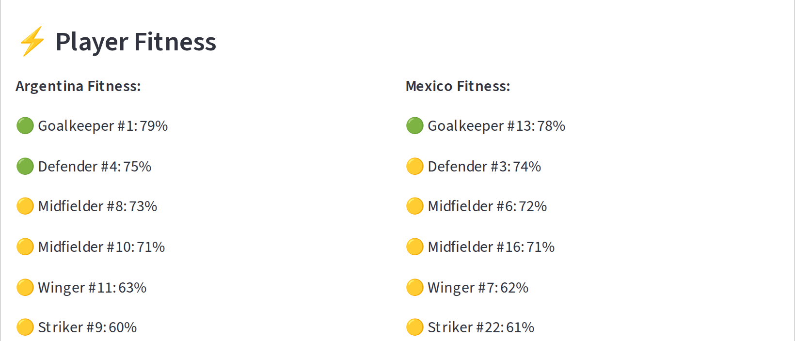

ARG
1–0
MEX
12'
Striker #9
60%
Fitness
Running on empty.
FIFA Shadow Coach
Live World Cup 2026 fitness + sub calls
🟢 PEAK
🟡 FAIR
🔴 CRITICAL
Live scores, straight from ESPN.


Every player's fitness, minute by minute.


12'
The sub call. Before the manager makes it.

81% confidence
FIFA Shadow Coach
$
streamlit run world_cup_app.py
▍
github.com/harshul27/fifalyst